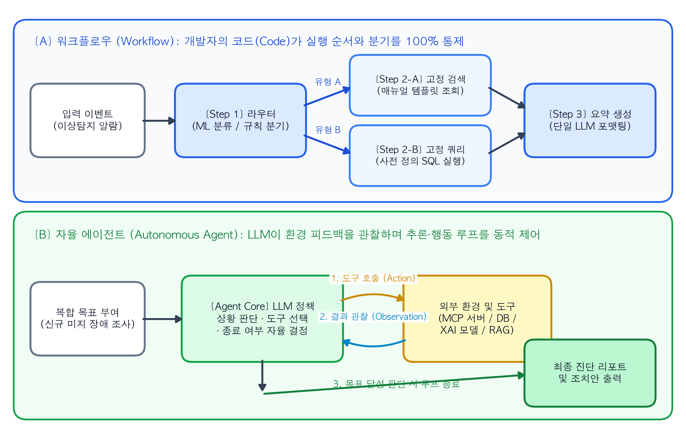
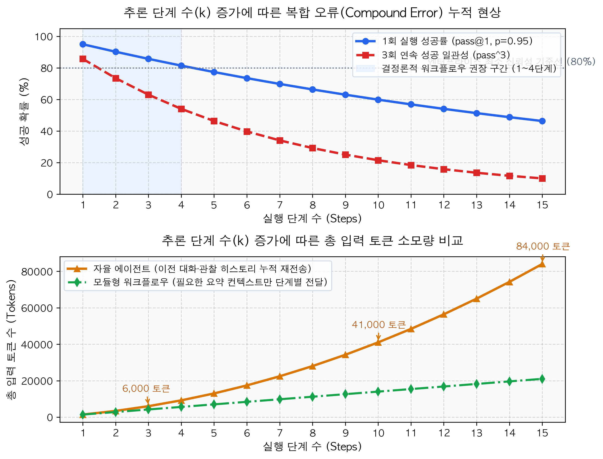

2 Workflow vs. Agent: 자율성의 수준을 결정하는 아키텍처 의사결정 트리
앞 장에서는 정형 데이터와 시계열 스트림을 다루는 엔터프라이즈 환경에서 왜 단일 거대언어모델(LLM) 대신 전통적인 머신러닝·딥러닝 모델과 LLM을 결합한 복합 AI 시스템(Compound AI Systems)을 구축해야 하는지 살펴보았다. 전방의 머신러닝 모델(System 1)이 이상 징후를 감지하여 후방의 언어 모델 계층(System 2)을 호출하기로 결정했다면, 아키텍트는 곧바로 두 번째 설계 질문과 마주하게 된다.
“후방의 언어 모델 계층을 설계할 때, 개발자가 실행 순서를 코드로 고정한 워크플로우(Workflow)로 구현할 것인가, 아니면 LLM이 스스로 다음 행동을 결정하고 루프를 도는 자율 에이전트(Autonomous Agent)로 구현할 것인가?”
최근 산업계에서는 LLM을 두 번 이상 연속으로 호출하거나 외부 API를 연결하기만 하면 모두 ’에이전트’라고 부르는 경향이 있다. 그러나 시스템 엔지니어링 관점에서 워크플로우와 에이전트는 제어권의 소재(Locus of Control), 비용 구조, 실패 확률 분포가 전혀 다른 아키텍처다. 정해진 절차만으로 해결할 수 있는 문제에 자율 에이전트를 도입하면 불필요한 토큰 비용과 지연시간이 발생할 뿐 아니라, 무한 루프나 예측 불가능한 도구 호출로 인해 시스템 안정성이 크게 훼손된다.
본 장에서는 앤트로픽(Anthropic)의 엔지니어링 지침(“Building Effective Agents”, Schluntz & Zhang, 2024)과 프린스턴 대학교 연구진의 벤치마크 분석(“AI Agents That Matter”, Kapoor et al., 2024)을 바탕으로 두 아키텍처의 공학적 경계를 정의하고, 문제의 복잡도와 오류 허용치에 따라 최적의 구조를 선택하는 의사결정 프레임워크를 수립한다.
2.1 제어권의 소재로 구분하는 에이전틱 시스템(Agentic Systems)
2024년 12월, 앤트로픽의 에릭 슐룬츠와 배리 장(Schluntz & Zhang, 2024)은 수십 개의 엔터프라이즈 AI 구축 사례를 분석하여 포괄적인 의미의 에이전틱 시스템(Agentic Systems)을 제어 구조에 따라 두 가지 하위 범주로 엄격히 분류했다. 구분의 핵심 기준은 “시스템의 실행 경로(Control Flow)를 누가 결정하는가”이다.
2.1.1 1. 워크플로우(Workflows): 코드에 의해 사전 정의된 경로
워크플로우는 LLM과 도구(Tool)들이 사전에 작성된 결정론적 코드(Deterministic Code)의 통제하에 정해진 순서대로 호출되는 시스템이다.
예를 들어 "1단계: 이상탐지 모델의 SHAP 상위 변수 추출 -> 2단계: 해당 변수명으로 사내 매뉴얼 검색 -> 3단계: 검색된 문서를 바탕으로 요약 보고서 생성"이라는 파이프라인이 있다면, 각 단계 사이에서 어떤 함수를 호출할지는 파이썬 코드(if-else 분기문이나 순차 함수 호출)가 결정한다. LLM은 각 단계 내부에서 텍스트를 분류하거나 요약하는 제한된 역할만 수행할 뿐, 전체 파이프라인의 실행 순서를 임의로 바꾸지 못한다.
2.1.2 2. 에이전트(Agents): LLM에 의해 동적으로 결정되는 경로
반면 좁은 의미의 자율 에이전트는 LLM이 스스로 추론 과정과 도구 사용 방식을 동적으로 지시(Dynamically direct)하는 시스템이다.
개발자는 에이전트에게 달성해야 할 최종 목표(Goal)와 사용할 수 있는 도구들의 목록(Tools)만 제공한다. 작업을 완수하기 위해 어떤 도구를 어떤 순서로 호출할지, 도구의 실행 결과가 불충분할 때 검색어를 바꿔서 다시 시도할지, 아니면 작업이 완료되었다고 판단하여 루프를 종료할지에 대한 제어권이 전적으로 LLM의 런타임 판단에 위임된다.
NoteDS Bridge: 기존 ML 개념과 에이전트 개념 1:1 매칭하기
머신러닝 엔지니어에게 익숙한 모델과 파이프라인의 개념을 빌려오면, 워크플로우와 에이전트의 차이는 고정된 추론 그래프(Static Computation Graph)와 상태 기반 강화학습 정책(State-driven Policy)의 차이로 명확히 대응된다.
| 비교 기준 | 워크플로우 (Workflow) | 자율 에이전트 (Autonomous Agent) |
|---|---|---|
| 전통적 ML 대응 개념 | Airflow/Kubeflow 기반의 정적 DAG 파이프라인, 고정 깊이 결정 트리 | 마르코프 결정 과정(MDP)에서 상태(\(s_t\))를 관찰하며 행동(\(a_t\))을 선택하는 정책(\(\pi\)) |
| 제어권의 소재 | 개발자가 작성한 애플리케이션 코드 (if/else, for 루프) |
LLM의 런타임 추론 (while not done: 내부의 동적 분기) |
| 실행 단계 수 (Steps) | 사전에 확정됨 (예: 정확히 3단계 실행 후 종료) | 입력 데이터와 환경 피드백에 따라 가변적임 (종료 시점 예측 불가) |
| 지연시간 및 비용 | 상한선(Upper Bound)이 명확하여 예산 산정이 용이함 | 탐색 실패 및 재시도 발생 시 토큰 소모량과 지연시간이 급증함 |
| 주요 디버깅 대상 | 개별 단계의 프롬프트 입출력 및 분기 조건문 | 다단계 추론 궤적(Trajectory), 도구 선택 오류, 루프 종료 조건 |
2.2 엔터프라이즈 표준 디자인 패턴 6가지 해부
실무에서 구축되는 복합 AI 시스템은 완전히 고정된 단일 호출부터 완전 자율 에이전트까지 연속적인 스펙트럼 위에 존재한다. Schluntz & Zhang(2024)이 정립한 5가지 워크플로우 패턴과 1가지 자율 에이전트 패턴의 작동 원리 및 적용 시나리오는 다음과 같다.
2.2.1 패턴 1. 프롬프트 체이닝 (Prompt Chaining — Workflow)
하나의 복잡한 작업을 여러 개의 순차적인 하위 작업(Sub-tasks)으로 분할하고, 앞 단계 LLM의 출력을 다음 단계 LLM의 입력으로 전달하는 가장 기본적인 파이프라인이다. 중간 단계에 파이썬 코드로 작성된 프로그래밍 방식의 검증 게이트(Programmatic Gate)를 배치하여 출력 형식이 잘못되었거나 필수 정보가 누락되었을 때 즉시 흐름을 중단하거나 재시도할 수 있다. * 적합한 실무 사례: 정형화된 일일 장애 리포트 생성 (1단계: 로그 데이터에서 핵심 지표 요약 \(\rightarrow\) 코드 검증: 필수 메트릭 포함 여부 확인 \(\rightarrow\) 2단계: 임원 보고용 양식으로 변환).
2.2.2 패턴 2. 라우팅 (Routing — Workflow)
입력된 요청이나 이벤트의 성격을 먼저 분류(Classification)한 뒤, 각 유형에 특화된 후속 프롬프트, 모델, 또는 파이프라인으로 분기시키는 구조다. 앞서 1장에서 다룬 전통적 ML 분류 모델이나 경량 언어 모델(SLM)을 라우터로 활용하면 시스템 전체 비용을 크게 낮출 수 있다. * 적합한 실무 사례: 고객 문의 및 시스템 알람 분류 (단순 상태 조회 요청은 경량 모델 및 SQL 조회 파이프라인으로 보내고, 복합 장애 알람은 고성능 추론 모델로 라우팅).
2.2.3 패턴 3. 병렬화 (Parallelization — Workflow)
독립적인 여러 하위 작업을 동시에 실행한 뒤 결과를 코드로 취합(Aggregation)하는 패턴이다. 크게 두 가지 방식으로 나뉜다. 1. 섹셔닝(Sectioning): 하나의 작업을 서로 다른 하위 항목으로 쪼개어 병렬 처리한다. 예를 들어 한 모델이 사용자 질문에 대한 답변을 생성하는 동안, 별도의 모델이나 분류기가 동시에 해당 입력의 보안 정책 위반 여부(Guardrail)를 검사한다. 2. 보팅(Voting): 동일한 작업을 여러 모델이나 서로 다른 프롬프트로 동시에 실행한 뒤 다수결로 최종 결과를 채택한다. 머신러닝의 배깅(Bagging)이나 앙상블(Ensemble) 기법과 동일한 원리로 작동하며, 고위험 코드 취약점 검토나 다각도 문서 검증에 활용된다.
2.2.4 패턴 4. 오케스트레이터-워커 (Orchestrator-Workers — Hybrid Workflow)
고정된 워크플로우에서 자율 에이전트로 넘어가는 징검다리 패턴이다. 중앙의 오케스트레이터(Orchestrator) LLM이 입력된 문제를 분석하여 필요한 하위 작업들을 동적으로 계획하고, 이를 여러 전문 워커(Worker) LLM에게 할당한 뒤 결과를 종합한다. 패턴 3(병렬화)과의 결정적인 차이는 하위 작업의 개수와 내용이 사전에 코드로 고정되어 있지 않고, 입력 문제에 따라 오케스트레이터가 실시간으로 결정한다는 점이다. * 적합한 실무 사례: 다수의 마이크로서비스나 코드 파일이 얽혀 있어, 사전에 몇 개의 파일을 수정해야 할지 알 수 없는 소프트웨어 패치 작업 및 복합 시스템 영향도 분석.
2.2.5 패턴 5. 평가자-최적화기 (Evaluator-Optimizer — Workflow Loop)
하나의 LLM(생성기, Generator)이 초안을 작성하면, 별도의 기준을 가진 평가 모듈(Evaluator LLM 또는 검증 코드)이 이를 채점하고 구체적인 피드백을 반환하여 기준을 통과할 때까지 반복 개선하는 루프 구조다. 머신러닝의 반복적 최적화(Iterative Optimization) 과정과 유사하다. * 적합한 실무 사례: Text-to-SQL 쿼리 생성 및 검증 (생성기가 SQL을 작성 \(\rightarrow\) 평가기가 실제 DB 실행 계획 및 문법 오류 검증 \(\rightarrow\) 오류 메시지를 바탕으로 쿼리 수정).
2.2.6 패턴 6. 자율 에이전트 (Autonomous Agent)
사전에 정의된 단계 없이, LLM이 환경(Environment)과 직접 상호작용하며 [사고(Thought) -> 도구 호출(Action) -> 결과 관찰(Observation)]의 루프를 스스로 반복하는 구조다. 실행할 때마다 거치는 단계 수와 호출하는 도구의 조합이 달라진다. * 적합한 실무 사례: 원인을 전혀 알 수 없는 신규 시스템 장애 조사처럼, 첫 번째 로그 조회 결과를 확인한 뒤에야 다음에 어떤 서버의 매뉴얼이나 DB를 뒤져야 할지 결정할 수 있는 개방형 문제(Open-ended problems).
TipArchitecture Blueprint: 결정론적 워크플로우 vs. 자율 에이전트 제어 구조
다음 도식은 엔터프라이즈 환경에서 가장 널리 쓰이는 워크플로우 패턴(체이닝, 라우팅, 오케스트레이터-워커)과 자율 에이전트 루프의 제어 흐름 차이를 비교한 아키텍처 설계도다.
2.3 자율성의 대가: 복합 오류(Compound Error)와 비용의 수리적 분석
많은 개발 조직이 문제의 성격을 따져보지 않고 처음부터 패턴 6(자율 에이전트)을 도입하려다 실패한다. 프린스턴 대학교의 사야시 카푸어 연구팀(Kapoor et al., 2024)은 “AI Agents That Matter” 논문에서 기존의 수많은 에이전트 벤치마크 연구들이 정확도(Accuracy)만 측정할 뿐, 에이전트가 정답을 찾기 위해 소모한 비용과 반복 추론의 불안정성을 간과하고 있다고 비판했다. 실제로 여러 벤치마크에서 복잡한 자율 에이전트보다 단순하고 잘 설계된 하드코딩 워크플로우가 훨씬 낮은 비용으로 더 높은 신뢰성을 달성했다.
자율 에이전트가 실무에서 취약해지는 가장 근본적인 이유는 복합 오류(Compound Error)와 꼬리 지연시간(Tail Latency)에 있다.
에이전트가 하나의 과업을 완수하기 위해 총 \(k\)번의 단계(도구 선택, 인자 생성, 결과 해석 등)를 거쳐야 하고, 각 단계에서 올바른 판단을 내릴 독립적인 성공 확률을 \(p \in (0, 1)\)라고 가정해 보자. 전체 과업이 중간에 길을 잃지 않고 한 번에 완수될 확률 \(P(\text{Success})\)는 단계 수 \(k\)에 대해 지수적으로 감소한다.
\[P(\text{Success}) = p^k\]
예를 들어 단일 단계에서 LLM이 올바른 도구를 선택하고 정확한 JSON 인자를 생성할 확률이 \(p = 0.95\) (95%)라고 하면, 단건 호출에서는 매우 우수한 모델처럼 보인다. 그러나 3단계로 고정된 워크플로우에서는 최종 성공률이 \(0.95^3 \approx 85.7\%\)로 유지되는 반면, 자율 에이전트가 탐색 과정에서 10단계를 거치면 \(0.95^{10} \approx 59.9\%\), 15단계를 거치면 \(0.95^{15} \approx 46.3\%\)로 추락한다.
더욱이 Yao et al.(2024)이 발표한 \(\tau\)-bench 연구에 따르면, 엔터프라이즈 환경에서는 에이전트가 어쩌다 한 번 성공하는 것(\(\text{pass}@1\))이 아니라, 동일한 유형의 업무를 \(m\)번 반복 실행했을 때 모든 시행에서 일관되게 성공할 확률(\(\text{pass}^m\))이 중요하다. 1회 실행 성공률이 \(p^k\)일 때 \(m\)회 연속으로 정책 위반 없이 성공할 확률은 \((p^k)^m = p^{km}\)이 되어 신뢰성이 급격히 붕괴한다.
또한 비용 측면에서도 자율 에이전트는 매 스텝마다 이전 단계의 행동과 관찰 결과(Observation)를 컨텍스트 윈도우(메시지 히스토리)에 누적하여 재전송한다. 기본 시스템 프롬프트 크기를 \(T_{\text{sys}}\), 매 스텝 추가되는 평균 관찰 토큰을 \(T_{\text{obs}}\)라 할 때, \(k\) 스텝 실행 시 총 입력 토큰 소모량 \(C(k)\)는 선형이 아니라 이차 함수(\(O(k^2)\)) 형태로 증가한다.
\[C(k) = \sum_{i=1}^{k} \left( T_{\text{sys}} + i \cdot T_{\text{obs}} \right) = k \cdot T_{\text{sys}} + \frac{k(k+1)}{2} T_{\text{obs}}\]
아래 파이썬 시뮬레이션 코드를 통해 추론 단계 수(\(k\))가 증가할 때 워크플로우와 자율 에이전트의 단일 성공률, 3회 연속 일관성(\(\text{pass}^3\)), 그리고 누적 토큰 비용이 어떻게 변화하는지 정량적으로 확인해 보자.
import numpy as np
import pandas as pd
import matplotlib.pyplot as plt
# 1. 단계 수(k = 1 ~ 15)에 따른 신뢰성 및 누적 토큰 비용 수리 모델링
steps = np.arange(1, 16)
step_accuracy = 0.95 # 단일 스텝 성공 확률 (95%)
base_sys_tokens = 800 # 기본 시스템 프롬프트 및 도구 스키마 토큰 수
obs_tokens_per_step = 600 # 매 스텝 누적되는 도구 실행 결과(Observation) 토큰 수
# 1회 성공 확률 (pass@1 = p^k) 및 3회 연속 일관성 지표 (pass^3 = (p^k)^3)
pass_at_1 = (step_accuracy ** steps) * 100
pass_power_3 = ((step_accuracy ** steps) ** 3) * 100
# 워크플로우(단계별 독립 컨텍스트) vs 에이전트(히스토리 누적 컨텍스트) 토큰 소모량
workflow_tokens = steps * (base_sys_tokens + obs_tokens_per_step)
agent_cumulative_tokens = [
sum(base_sys_tokens + i * obs_tokens_per_step for i in range(1, k + 1))
for k in steps
]
summary_df = pd.DataFrame({
"실행_단계_수(k)": [3, 5, 10, 15],
"아키텍처_영역": ["고정 워크플로우(3단계)", "단기 에이전트(5단계)", "중기 에이전트(10단계)", "장기 에이전트(15단계)"],
"1회_성공률_pass@1(%)": np.round(pass_at_1[[2, 4, 9, 14]], 1),
"3회_연속성공_pass^3(%)": np.round(pass_power_3[[2, 4, 9, 14]], 1),
"에이전트_누적토큰": [agent_cumulative_tokens[i] for i in [2, 4, 9, 14]]
})
print("[단계 수(k) 증가에 따른 신뢰성 및 토큰 비용 시뮬레이션 요약]")
print(summary_df.to_string(index=False))
# 2. 고대비 상하 2단 시각화
fig, axes = plt.subplots(2, 1, figsize=(9, 6.8))
# 상단 그래프: 단계 수 증가에 따른 성공률 감소 곡선
axes[0].plot(steps, pass_at_1, marker="o", color="#2563eb", linewidth=2.5, label="1회 실행 성공률 (pass@1, p=0.95)")
axes[0].plot(steps, pass_power_3, marker="s", color="#dc2626", linewidth=2.5, linestyle="--", label="3회 연속 성공 일관성 (pass^3)")
axes[0].axvspan(1, 4, color="#dbeafe", alpha=0.45, label="결정론적 워크플로우 권장 구간 (1~4단계)")
axes[0].axhline(80, color="#64748b", linestyle=":", linewidth=1.2)
axes[0].text(11.5, 82, "엔터프라이즈 최소 신뢰성 기준선 (80%)", fontsize=9.5, fontweight="bold", color="#475569")
axes[0].set_title("추론 단계 수(k) 증가에 따른 복합 오류(Compound Error) 누적 현상", fontsize=13, fontweight="bold", pad=12)
axes[0].set_xlabel("실행 단계 수 (Steps)", fontsize=11, fontweight="bold")
axes[0].set_ylabel("성공 확률 (%)", fontsize=11, fontweight="bold")
axes[0].set_xticks(steps)
axes[0].set_ylim(0, 105)
axes[0].grid(True, linestyle="--", alpha=0.5)
axes[0].legend(loc="upper right", frameon=True, facecolor="white", edgecolor="#cbd5e1", fontsize=9.5)
# 하단 그래프: 히스토리 누적에 따른 입력 토큰 비용 증가 (O(k^2))
axes[1].plot(steps, agent_cumulative_tokens, marker="^", color="#d97706", linewidth=2.5, label="자율 에이전트 (이전 대화·관찰 히스토리 누적 재전송)")
axes[1].plot(steps, workflow_tokens, marker="d", color="#16a34a", linewidth=2.2, linestyle="-.", label="모듈형 워크플로우 (필요한 요약 컨텍스트만 단계별 전달)")
axes[1].set_title("추론 단계 수(k) 증가에 따른 총 입력 토큰 소모량 비교", fontsize=13, fontweight="bold", pad=12)
axes[1].set_xlabel("실행 단계 수 (Steps)", fontsize=11, fontweight="bold")
axes[1].set_ylabel("총 입력 토큰 수 (Tokens)", fontsize=11, fontweight="bold")
axes[1].set_xticks(steps)
axes[1].grid(True, linestyle="--", alpha=0.5)
axes[1].legend(loc="upper left", frameon=True, facecolor="white", edgecolor="#cbd5e1", fontsize=9.5)
# 10단계 및 15단계 토큰 수치 주석 표시
for k_idx in [2, 9, 14]:
k_val = steps[k_idx]
tok_val = agent_cumulative_tokens[k_idx]
axes[1].annotate(f"{tok_val:,} 토큰", xy=(k_val, tok_val), xytext=(k_val - 0.8, tok_val + 8000),
fontsize=9.5, fontweight="bold", color="#b45309",
arrowprops=dict(arrowstyle="->", color="#d97706", lw=1.2))
plt.tight_layout()
plt.show()[단계 수(k) 증가에 따른 신뢰성 및 토큰 비용 시뮬레이션 요약]
실행_단계_수(k) 아키텍처_영역 1회_성공률_pass@1(%) 3회_연속성공_pass^3(%) 에이전트_누적토큰
3 고정 워크플로우(3단계) 85.7 63.0 6000
5 단기 에이전트(5단계) 77.4 46.3 13000
10 중기 에이전트(10단계) 59.9 21.5 41000
15 장기 에이전트(15단계) 46.3 9.9 84000
2.3.1 시뮬레이션 결과 해석
- 신뢰성의 급격한 저하 (상단 그래프): 단일 스텝 정확도가 95%에 달하더라도, 에이전트가 10단계를 자율 탐색하면 1회 성공률(
pass@1)은59.9%로 떨어지며, 3번 연속 문제없이 수행할 확률(pass^3)은21.5%까지 하락한다. 반면 실행 경로를 3단계 이내로 압축한 결정론적 워크플로우 구간(파란색 음영)에서는 높은 성공률을 안정적으로 방어할 수 있다. - 히스토리 누적으로 인한 토큰 급증 (하단 그래프): 워크플로우는 각 단계에 필요한 요약 정보만 정제하여 넘기므로 토큰 사용량이 완만한 선형(
Linear)으로 증가한다. 반면 자율 에이전트는 이전 스텝의 모든 도구 실행 결과를 컨텍스트에 계속 쌓아가며 매번 다시 읽어들여야 하므로, 15단계에 이르면 단일 과업 하나에84,000토큰 이상을 소모하게 된다.
2.4 실무 아키텍처 선택을 위한 4단계 의사결정 기준
따라서 아키텍트는 “가장 단순한 해결책부터 시작하고, 결정론적 워크플로우로 해결할 수 없을 때만 자율성을 단계적으로 높인다”는 원칙을 지켜야 한다(Schluntz & Zhang, 2024). 새로운 요구사항이 주어졌을 때 아키텍처를 결정하는 4가지 핵심 기준은 다음과 같다.
- 작업 경로의 결정 가능성 (Procedure Predictability): 문제를 해결하기 위해 거쳐야 하는 단계와 호출해야 할 도구들을 사전에 화이트보드에 순서도로 그릴 수 있는가? 순서도를 그릴 수 있다면 에이전트가 아니라 워크플로우(체이닝 + 라우팅)로 구현해야 한다.
- 환경의 불확실성과 동적 피드백 필요성: 첫 번째 도구를 실행해 보기 전에는 두 번째로 무엇을 해야 할지 전혀 알 수 없는 문제인가? (예: 버그의 원인이 코드 문법 오류인지, DB 연결 타임아웃인지, 외부 API 버전 변경인지 실행 결과를 보며 추적해야 하는 경우) 이 경우에만 자율 에이전트 또는 오케스트레이터-워커 패턴이 정당화된다.
- 오류 허용치와 가역성 (Risk Tolerance & Reversibility): 잘못된 행동을 했을 때 쉽게 되돌릴 수 있는가(예: 읽기 전용 매뉴얼 검색, 코드 초안 작성), 아니면 치명적인 손실이 발생하는가(예: 고객 계좌 환불 실행, 통신망 라우팅 테이블 변경, 데이터베이스
DROP/UPDATE)? 비가역적 작업은 반드시 결정론적 워크플로우나 인간 승인(Human-in-the-Loop) 게이트로 통제해야 한다. - 지연시간 및 예산 상한선 (SLA & Budget Constraints): 실시간 응답(예: 3초 이내)이 요구되는 서비스에서는 다단계 루프를 도는 에이전트를 사용할 수 없다. 백그라운드에서 비동기(Asynchronous)로 수 분간 실행되어도 무방한 심층 분석 업무에만 자율 에이전트를 배치한다.
WarningEval Lab & Failure Log: 무분별한 자율 에이전트 도입 실패와 하이브리드 리팩토링
아래 사례는 서버 이상탐지 알람 발생 시 초기 대응 리포트를 생성하는 프로젝트에서, 모든 과정을 단일 자율 에이전트에 위임했다가 발생한 실제 실패 모드와 이를 ‘라우팅 워크플로우 + 제한된 에이전트’ 구조로 리팩토링하여 해결한 실험 기록이다.
| 비교 항목 | ❌ 실패 사례: 모든 알람을 완전 자율 에이전트(ReAct)로 처리 | ✅ 개선 사례: 결정론적 라우팅 + 3스텝 제한 하이브리드 구조 |
|---|---|---|
| 아키텍처 구조 | 알람 수신 직후 LLM 에이전트에게 8개의 도구(DB 조회, 매뉴얼 검색, 메트릭 계산, 슬랙 발송 등)를 모두 주고 알아서 조사하게 함 | 1단계(코드 고정): SHAP 상위 변수 추출 및 알람 유형 분류 2단계(제한된 에이전트): 미지 장애일 때만 최대 3회 이내 매뉴얼/DB 탐색 3단계(코드 고정): JSON 스키마 검증 후 리포트 발송 |
| 주요 실패 모드 | • 불필요한 탐색(Over-exploration): 이미 알려진 단순 CPU 과부하 알람에도 DB 테이블을 7번씩 반복 조회함 • 무한 루프: 매뉴얼에 없는 에러 코드가 나오자 검색어만 조금씩 바꿔가며 15회 연속 호출 후 타임아웃 발생 |
• 알려진 장애 유형(80%)은 에이전트 루프 없이 고정 워크플로우로 즉시 처리 • 최대 탐색 횟수( max_steps=3)와 조기 종료 조건을 코드로 강제하여 무한 루프 원천 차단 |
| 3회 연속 성공률 (\(\text{pass}^3\)) | 48.2% (실행할 때마다 조회하는 테이블과 결론이 달라짐) | 94.6% (핵심 컨텍스트 수집 경로가 고정되어 일관된 리포트 생성) |
| 건당 평균 지연시간 / 비용 | 18.4초 / $0.14 | 3.1초 (83% 단축) / $0.018 (87% 절감) |
실무에서 위 개선 사례처럼 결정론적 워크플로우의 안정성과 에이전트의 유연성을 결합한 하이브리드 제어 구조는 다음과 같은 파이썬 의사코드(Pseudocode) 패턴으로 명확히 구현된다.
from dataclasses import dataclass
from typing import Literal
@dataclass
class AnomalyEvent:
event_id: str
anomaly_score: float
top_shap_feature: str
is_known_pattern: bool
def handle_anomaly_pipeline(event: AnomalyEvent) -> dict:
"""
[엔터프라이즈 하이브리드 제어 패턴]
전체 뼈대(라우팅, 종료 조건, 포맷 검증)는 결정론적 Python 코드로 통제하고,
사전에 경로를 알 수 없는 '미지 장애 원인 탐색' 구간에만 제한된 에이전트 루프를 허용한다.
"""
# 1. 결정론적 게이트 (Workflow): 임계치 미달 이벤트는 LLM 호출 없이 즉시 종료
if event.anomaly_score < 0.75:
return {"status": "ignored", "reason": "Below threshold"}
# 2. 결정론적 라우팅 (Workflow): 이미 해결 절차가 정립된 패턴은 고정 파이프라인으로 처리
if event.is_known_pattern:
manual_doc = fetch_standard_manual_by_feature(event.top_shap_feature)
report = generate_fixed_template_report(event, manual_doc)
return {"status": "resolved_by_workflow", "report": report}
# 3. 제한된 자율 에이전트 루프 (Bounded Agent): 신규 미지 패턴에 한해 최대 3스텝 탐색 허용
max_steps: int = 3
context_history: list[str] = [f"Initial SHAP cause: {event.top_shap_feature}"]
for step in range(1, max_steps + 1):
# LLM이 현재 누적된 단서를 바탕으로 다음 도구 호출 또는 조사 완료 여부를 결정
decision: Literal["search_db", "search_manual", "finish"] = llm_decide_next_action(context_history)
if decision == "finish":
break
elif decision == "search_db":
obs = execute_read_only_sql(event.event_id)
context_history.append(f"Step {step} DB Observation: {obs}")
elif decision == "search_manual":
obs = execute_hybrid_rag(event.top_shap_feature)
context_history.append(f"Step {step} Manual Observation: {obs}")
# 4. 결정론적 후처리 (Workflow): 최종 보고서 생성 및 스키마 검증은 다시 코드로 통제
final_report = generate_verified_report(event, context_history)
return {"status": "resolved_by_bounded_agent", "steps_used": step, "report": final_report}이 코드가 보여주듯, 훌륭한 에이전트 아키텍처란 모든 코드 제어문을 지우고 LLM에게 전권을 위임하는 것이 아니다. 예측 가능한 뼈대는 전통적인 소프트웨어 엔지니어링과 ML 모델(워크플로우)로 단단하게 고정하고, 오직 유연한 추론이 필수적인 병목 구간에만 상한선이 설정된 에이전트(Bounded Agent)를 배치하는 것이 엔터프라이즈 복합 AI 시스템의 핵심 설계 원칙이다.
다음 장에서는 본격적으로 에이전트 내부로 들어가, 전통적인 머신러닝 파이프라인에 익숙한 데이터 사이언티스트의 관점에서 에이전트의 3대 핵심 구성요소인 계획(Planning), 기억(Memory), 도구 사용(Tool Use)의 두뇌 구조를 해부한다.
ImportantProduction Checklist: 실무 프로젝트 설계 전 핵심 점검표
참고문헌 (References)
- Schluntz, E., & Zhang, B. (2024). Building Effective Agents. Anthropic Engineering Blog.
- Kapoor, S., Stroebl, B., Siegel, Z. S., Nadgir, N., & Narayanan, A. (2024). AI Agents That Matter. arXiv preprint arXiv:2407.01502.
- Yao, S., Shinn, N., Razavi, P., & Narasimhan, K. (2024). \(\tau\)-bench: A Benchmark for Tool-Agent-User Interaction in Real-World Domains. arXiv preprint arXiv:2406.12045.